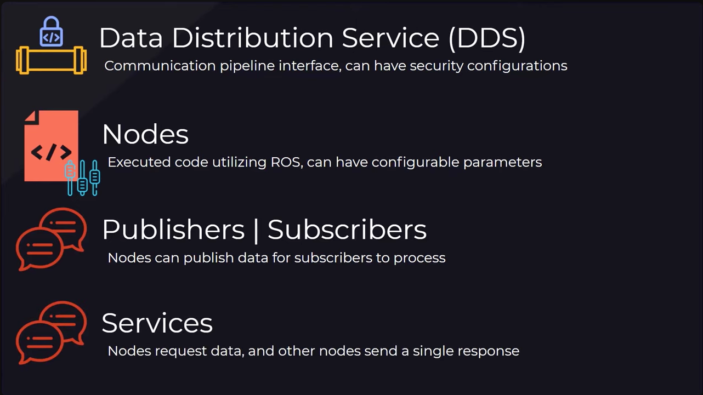
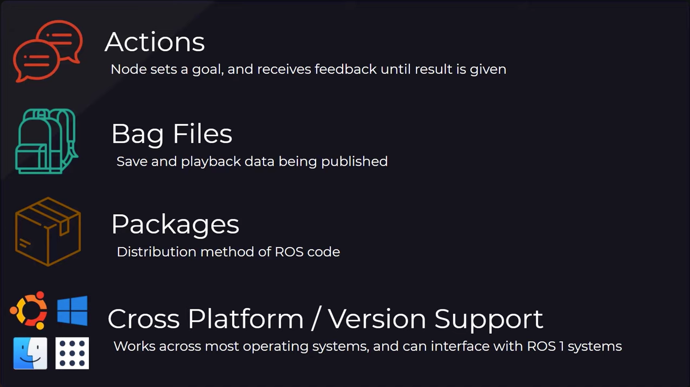
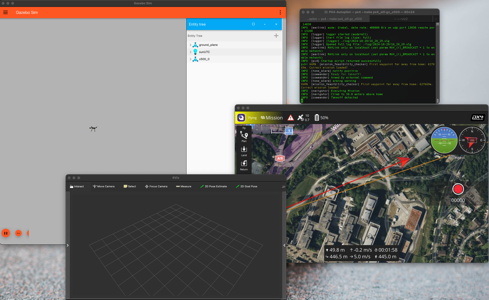

Tools
OpenCV
Library for implementing computer vision supporting python, c++, java, ...
Documentation
Installation
PX4
Tool for programming Pixhawk drones
- Integrated with Gazebo simulator
- Comparison with ArduPilot
PX4 was chosen because of good support on MacOS and integrated gazebo simulator
Installation
Run
# drone_ws/src
source drone_venv/bin/activate
cd PX4-Autopilot
make px4_sitl gz_x500 # starts gazebo simulator as well
In case of problems with startup, make sure QGroundControl station is running
Gazebo Harmonic
Physics simulator supporting drone simulation with PX4
Documentation
Installation on mac via Homebrew
brew tap osrf/simulation
brew install gz-harmonic
ROS 2 Humble
Collection of libraries and tools for programming robot systems (including drones)
What is ROS?


Documentation
Mac installation using conda
Run
conda activate
conda activate ros_env
rviz2 # starting the simulator as an example
QGroundControl
Mission planner and monitoring tool
Installation
MAVSDK
Running environment
